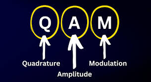
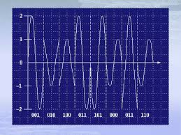

QAM combina variaciones de amplitud y fase para transmitir información. Sklar la considera una de las técnicas más avanzadas.
QAM permite transmitir múltiples bits por símbolo, logrando alta eficiencia espectral. Proakis explica que es ampliamente utilizada en redes modernas como cable e internet.


En conclusión, QAM es una técnica poderosa que maximiza el uso del ancho de banda.